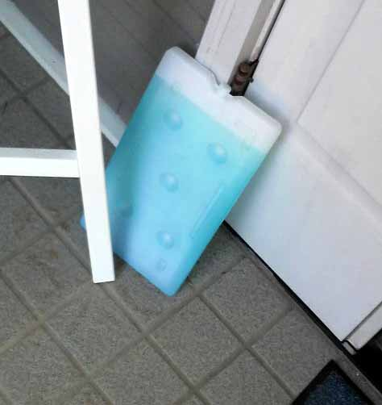
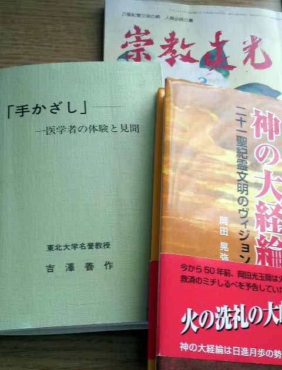
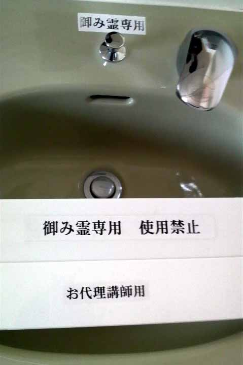
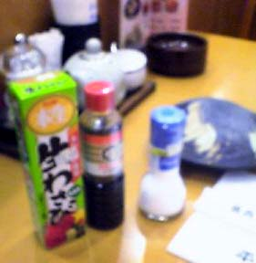
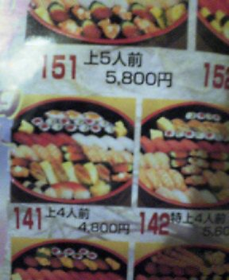
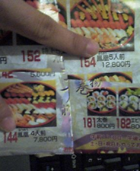

〜〜過去の雑記〜〜
20）06/02/21〜07/02/21分
19）05/12/09〜06/02/17分
18）05/07/19〜05/12/05分
17）05/04/04〜05/07/06分
16）04/12/17〜05/03/08分
15）03/08/25〜04/12/12分
14）03/03/13〜03/07/20分
13）03/01/20〜03/03/12分
12）02/09/30〜03/01/02分
11）02/07/08〜02/09/29分
10）02/01/07〜02/07/08分
９）01/08/30〜01/10/30分
８）01/06/20〜01/08/25分
７）01/05/09〜01/06/12分
６）01/03/02〜01/05/03分
５）01/02/06〜01/03/01分
４）00/12/30〜01/02/05分
３）00/12/22〜00/12/29分
２）00/12/14〜00/12/21分
１）00/11/24〜00/12/13分
（雑記の内容については、あくまでもフィクションであると捉えてください。実際の団体・個人等とは無関係です）

08/03/22
宗教体験してきました♪（特定の宗教団体等を批判する意図はございません）
京都の方に出張に行った。
出張はともかく、知り合いの女子高生と近江牛を楽しむなどという俗世間の快楽に溺れた１日に酔いしれていたら、電車で寝過ごしてしまい、ちょうど実家近くだったことから、少し帰ることとした。
というわけで、５年ぶり（くらいか？）の実家である。
宗教だのマルチ健康食品だのにやたら金をかける親で、会うたびに宗教儀式や勧誘をしてくるので、可能な限りかかわりあいたくなかったのだが……。
まず実家に帰って庭を見てみると、色とりどりの花が。
ほぅ、これはまぁ、なかなか手入れしとるではないか。
ふむ、これだけ見ている限り、まったく宗教くさくな・・・

何このいかにも怪しいやつ―――――！！
なんで玄関の前に置いてあるのー！！
凸「おかんこれ何」
母「これな、あんたすごい水やねんで。ものすごいエネルギーが入っとってな、ほんまに病気とかならへんねんで。ガンとかでも治った人いてるよ」
凸「飲むん？」
母「薄めて飲んでもええしな、置いとくだけでもええねん」
ほな、飲まずに置いとけ。一生減らんがな。
だいぶ便利な水やな。
まあこの程度で驚いていては、とてもやっていけない。
身体に電気を流してガンや万病を治すウン十万円の機械だの、磁石の力で水分子をひっつけてガンや万病を治す超強力磁石だの、うちには何でもあるからだ。
凸家の愚かさをなめていただいては困る（ｷﾘｯ
で、おとんとおかんが今はまりきっているのがこちら。

客観的な評価としては、イギリス、アメリカ、オーストラリア、イスラエル等の国々の新聞、あるいはフランスの議会報告書等で「カルト教団」と指摘されており、告発サイトも多数あるホンモノである。
手をかざすと（いわゆる「手かざし」）、四次元の霊の力に影響し、ガンや万病が治るそうな。
ていうかなんでこれ系は常に「ガンや万病が治る」ねん！！
ガンや万病治すだけなら、さっきの水１つで充分やろが！！
この手かざし、おかんが言うにはめっちゃ万能で、野菜や肉に手かざしをすると味がおいしくなったりするという。
タバコの味も変わるというので、タバコにもしてもらった。
あくまでも個人の体験であるが、まったく味に変化がみられなかった。
ちょっと疑わしかったので、おかんが手かざしをした塩と、していない塩でおにぎりを作ってもらい、おかんに食べさせて判別してもらうという実験まで行ってきた。
２つ食って、１つだけアタリ。
完全に偶然の範囲である。
信憑性を高めるため、おにぎりを1000個くらい食わしてくればよかった……。
ともあれ、そういう部分で反論してみても、おかんは認めない。
母「あんたの出た大学の名誉教授の人も認めてはるんやで」
確かに上の写真の左下、東北大学名誉教授の人の本にも「四次元の霊のパワーがうんぬん」「信じられるでしょうか」などと書いてある。
無駄な権威主義やめろ。
その100倍の名誉教授が否定するわ！
しかし面白そうなので、ちょっと本を手にとって読んでみる。
「はじめに
火の洗礼の大峠へ突入――日本を中心にして世界は熱くなる。
この予想だにしない警句は今を去る五十年前、冠絶の宗教者・岡田光玉師の預言である。」
（Ｌ・Ｈ陽光出版『神の大経論 二十一聖紀霊文明のヴィジョン』２ページより。以下同じ。）
僭越ながら、申し上げてよろしいでしょうか。
よろしい？ まじ？ きっとみんなビックリしちゃうぞ♪
文章がうんこ！ てにをはがなってない！！（「熱く」は当て字としても）
ほぼ同じことを書かないとダメという制限があっても、例えば最後の文なら、次のようにすればだいぶ読みやすくなるだろうが。
「この予想だにしない警句は、今を去る五十年前、冠絶の宗教者・岡田光玉師が預言したものである。」
もっときれいにするなら、
「今を去る五十年前、冠絶の宗教者・岡田光玉師が預言した警句である。」
としなさい（警句を預言する、という表現自体、かなり抵抗があるけどな・・・）。
はっ！？ わざとか……四次元の文章かこれは！
四次元のうんこが書いた文章かっ！！
で、「日本を中心にして世界が熱くなる」証拠に、２００７年に国内で観測史上最高気温である４０．７度が観測されたことが挙げられている。
むろん、２００７年に日本以外の国において、観測史上最高気温が出たかどうかについては一切触れられていない。
また、１９２１年、イラクで世界最高気温と言われる５８．８度が観測されたことも見逃されたままである。
どうにも私には、世界はイラクを中心にして熱くなるような気がしてならない（これは冠絶の麻雀研究家兼ニート志望家・とつげき東北の警句である）。
まあ内容はいい。次の文章に進む。
「最新の国連気候変動に関する政府間パネルでは、このまま二酸化炭素などの温室効果ガスを排出し続けるならば、二〇四〇年の夏には地球上の氷が消滅するという衝撃的な発表である。」
おい、これ読んでる中学生。この文の文法の何がおかしいかを指摘しなさい。
ヒント：「×発表である ○発表があった」
１ページ目からしてこれである。
読む気でねぇ・・・これを読み続けるくらいなら、ゲップをすることなくコーラを何本飲めるか、とか、そういった有意義な時間を過ごしてぇ……。
社会に出るのが嫌で大学４年になってから急に自分探しを始めるダメ大学生のような気持ちになりながら、適当にぱらぱらと読むことにした。
２１世紀は日本主体の世界が来るとか（なるほど、だから日本を中心として「熱く」なるわけだ 笑）、日本には神風が吹くのだとか、確かに諸外国から「アブネー」と思わかねないことも書かれていた。
人間がサルから進化したと主張する「進化論」などというのは「迷信」であって誤りだ、などは、まぁかわいいものである。
しかし、繰り返すが、内容はともかく文章が読みにくすぎる。
とりあえず月収５０万円で、私をゴーストライターとして雇おう！ 読者増えるよ……
まあ本についてはこれくらいで。
親とちょっとだけ議論したが、「実際に体験してみなければわからない」の一点張りに終わったので、ならばと「道場（実際に「手かざし」をしてくれるところ）」についていってやることにした。
私が車を運転して向かったのだが、道場に入っていくところを間違っても中学〜高校の同級生などに見られないよう必死だった。
もし見られたりしたら……
Ａ「うわ凸、昔あんなに理屈っぽかったくせに、宗教やっとるやん！！」
Ｂ「ほんまや！ アホやで」
Ａ「顔もブサイクやしな」
待て待て待て！！！
最後の１文は当たってるし！
宗教やってるんとちゃうで！
ちゃうけどむしろ最後の１文が一番イタイから傷つくで！！！
道場の概観などの写真は自重させていただくが、入ってみると手を洗う場所が。

御み霊の意味がわかりませんが。
それから、御み霊専用であるにもかかわらず、お代理講師用でもあるという驚愕の事実。
「専用」とは程遠いわ！！
これぞ矛盾を超越する四次元の論理。
こんな部分が少しだけ気になった、３１の夜。バイクを盗むために全力疾走で走り出すぞお前ら。
（役所の）庁舎の裏タバコを吹かして見つかれば逃げ場もない。
それでまあ中に入り、道場長（？）のようなエライ人に１０分間、手かざしをしてもらった。
こっちは最初から最後まで手をあわせて目をつぶっているだけ。
眠りそうになってたら急にどでかい声で
道場長「おし〜〜ずまり〜〜！ おし〜〜ずまり〜〜〜！ おし〜〜〜ぃぃずまりぃぃィィ〜〜〜〜！」
（たぶん何か霊を鎮めるということらしい）
道場長さん！！ ちょっとあなたが鎮まって！！！
イッてる！ いっちゃってる！！ 何かがあなたをとても押し詰まらせてる感じがするっ！！
ま、何ということもなく、お礼を言って終了。
母が金を封筒に包んでいたが、何（万？）円入っているかは未知である。
道場の部屋の入り口の上に、「めざせ！ 中道場！」と書いた紙がでかでかと貼ってあったのが微笑ましかった。
やはりこういった世界でも、少しでも勢力を拡大することが大切なのだろう。
帰り際、ひたすらおかんが「凸、身体あったかくなったやろ」「首痛いの治ったやろ」などと繰り返すのがうざかった。
何も変化せんわ。
母「凸もやってみいへん？」
役人的な答弁になるが、後ろ向きに検討してまいりたい。
母「おとんの会社の若い娘さんがな、初めて道場いったとき、ヘビの霊に取り付かれたらしくてな、道場をのた打ち回ったんやんで。若くてきれいな娘さんやのにほんまびっくりするくらいな……でもそれが治ったんやで」
論理的に言おう。それは、その娘がアホだったせいか、あるいはヘビの霊によるものである。
そして結論を言おう。そのきれいな娘さんを紹介しろ。
帰り際、おとんの新車を運転して帰ったのだが、なにぶんペーパードライバーなため、縁石に少しタイヤを擦ってしまった。
母「あんた！！！ 気をつけなさいっ！ タイヤは擦ったらすぐあかんようになるねんで！」
タイヤは手かざしで直せてめぇ。
07/08/24
夏休み！！
今日から夏期休暇です！！
しっかり日焼けするぞ〜！（家でPCの電磁波を浴びること等によって）
2007年７月１８日「霞が関国家公務員労組共闘会議」が発表したアンケート結果によると、霞が関の国家公務員における平均残業時間の上位は、
全労働 ８４ 時間 ／ 月
全厚生 ７９．３時間 ／ 月
とのことで、その大半が実質サービス残業であると考えられるところである。ちなみに全体平均でも４０時間を越える。
何が「小さな政府」を目指して国家公務員削減だ。業務量に対して人が少なすぎるわ！
国民全員死ね！ さもなければ私が美人にモテモテになれ！！
上記国家公務員に比較して勤務時間が圧倒的に短いボンクラ民間企業労働者ども（毎月勤労統計調査調べ平均）はもっと頑張るべきだろうが、国家公務員にも「夏休み」が３日間もあるのだ。
というわけで休暇簿に夏休みを記入する。
さすがに公務員、「夏休み」などと軽いノリで書いてはいけないだろう。
「夏期休暇」と記入し、提出する。
担当「東北さん、これじゃダメ」
凸「え？ なんでですか」
担当「夏期休暇を取得する理由を記入することになっているの」
凸「はぁ？ 休みたいからですよ。『休みたいので』でいいですか？」
担当「ダメダメ、ほらここに記入例があるでしょ」
凸「どれどれ……」
記入例：「夏季における心身等のリフレッシュのため、夏期休暇を取得するものである」
堅いわ！！！ バリ堅やわ！！
しかも、みんなこの記入例どおりに書いてるだけやん！
意味ないやんその仕組み！！！
この無駄な仕組みのせいで、私の平均残業時間は月あたり１０秒くらい増加した。
07/07/22
弱気ＤＶＤ
ブートキャンプのビリー曰ク（漢文風）、
「効果は約束する」
「君ならできる！」
「信じるんだ！ そう！」
「俺についてこい！」
うむ、さすがにかっこいい。
「Victory!」
うおー、やる気出るぜビリー！！
ふむー、このＤＶＤが絶賛大好評かぁ。うらやましいな。
しかし待てよ？
おれだって充分細いじゃないか。
ダイエットのＤＶＤくらい作れるのではないか？
「少なくともプラシーボ効果は約束する」
「君ならできるんじゃないか？」
「信じてくれ！ 頼む！」
「できれば俺についてきてくれないか！？」
くっ……やはり自信がないため、どうしても安全なお願いベースにっ……！
「Factory!」
なにが「工場」やねん。
07/07/20
困る書評
拙著『科学する麻雀』（講談社現代新書）及び『超・入門 科学する麻雀』（洋泉社）に関するネット上の書評のうち、おもろげなのを拾ってきた。
（１）
確かに麻雀を科学的に解明したことは驚嘆に値する。
しかし、腑に落ちないのは当の本人はプロにはならず
蚊帳の外で新戦術を宣っていることだ。
ただ単に印税を得るのが目的なのではないか？
ネット麻雀では通用するがリアルでは果たして彼の理論は通じるのであろうか…
【ワンポイント毒舌】
おれの活動が「ただ単に印税を得る」ことだとすれば、世の中のほとんどは「ただ単に息をしているだけ」の連中だけどな！！
（２）
前作かなり不評だった為に書き直された本。
前作では大半の読者が理解できないようなプログラム紹介は、ページの埋め合わせにしか思えない。
著者名通りとにかく突撃しろっていうのがこの本の特徴。 先制されたら安パイ連打。
この本の売り上げが難民に寄付されないとしたら犯罪に等しいといっても過言ではないだろう。
（http://mixi.jp/view_item.pl?page=2&id=676823）
【ワンポイント毒舌】
文句はいいとして、発売前に既に書評するな！ 31人中お前だけだ１点つけてるのは！
（３）
麻雀が楽しいのは、チョンボがあるからである。
当事者として、また他者のそれを間近で、
ヒューマン・エラーを「楽しめる」。
であるからこそ、麻雀は楽しい。
膨大なデータをもつオンライン・ゲームを素材にして、
「閉ざされた」世界だけを分析対象とした本書には失望した。
点数計算、お釣り、点棒皿、などにおける誤り、
少牌、多牌、芸術としてのツミコミの応酬、
誤ロン、誤ツモ、、、
意図的なチョンボと意図せざるチョンボ、
麻雀を「楽しめる麻雀」たらしめている、
こうした「人間臭さ」を本書は一切捨象してしまっている。
「文学的麻雀から数理的麻雀へ」という著者の主張は、
「科学した」のでなく麻雀を「矮小化した」だけである。
【ワンポイント毒舌】
えっと……チョンボが麻雀の魅力でしたか……すみません…… ←謝った！？
07/07/15
ニート脱出法
ほぼニート生活に陥っている大学生の友人が、私に「おれ、ニート脱出したぜ！」と宣言してきた。
まさか。
問いただすと、彼いわく、
「ニートってのは、NEET、つまりNot in Education, Employment or Trainingということだろ？ 確かに大学はもう留年しまくってるからEducationはしていないとも言える。しかしおれは、Trainingを始めたんよ！！」
とのことらしい。
いかにも怪しいのでさらに聞くと、「ビリーズ・ブートキャンプ」を実行することにより「Training」を始めたから自分はニートではない、とのことだ。
凸「あのな、そこで言うTrainingというのは、職業訓練のことだぞ。」
友人「えっ……」
凸「知らなかったん？ プ」
友人「し、知ってるわ！！」
凸「じゃあお前、ダイエットして何の職業になるねん。」
友人「『逆すもうとり』に……」
凸「ないわそんな職業」
友人「orz」
こうして彼は再び、ニートの世界に舞い戻っていった。
余談だが、ニートが増加すると完全失業率が低下する。
なぜなら、完全失業率の定義は「就業する気があり、かつ就業の潜在能力がある人のうち、失業している人の割合」だからだ。
つまり、最初からやる気がなければ完全失業者にならない。ニートの増加により、完全失業率は低下する。ニートも社会の役に立っているというわけだ(笑)
07/06/21
金よこせ
以前にも書いたが、私の本『科学する麻雀』（講談社現代新書）。
初めの頃は、講談社からじきじきに「とつさん！ 増刷です！ おめでとうございます！！ そしてありがとうございます！」などと連絡がきていた。
あの頃は、何もかもが輝いていた←
４刷目あたりから、「おめでとー」程度のテンションになった。
６刷目はもう「おめおつ」レベル。
９刷目、ついに何の連絡もなくなり、銀行に金のみが振り込まれている状態となった……。
まさに夫婦の倦怠期並である。
ところで、ふと今日、近所の本屋に用があって立ち寄った。
すると、なんと発売してもう２年以上にもなる私の本が、平積み的に扱われていたのだ！
神よ！
私はあなたを信じないが、あなたの慈悲の結果私にもたらされたのかもしれない幸運にのみ、感謝する！！
アーメン！
実は、発売当初より、この本屋には私の本は置いていなかった。
凸「とつげき東北の科学する麻雀置いてませんか」
凸「科学する麻雀探しているんですけど入荷予定は？」
凸「あのぅ……科学する麻雀っていう本を探しているんですがね！？」
などと、自作自演で２０回くらい店員に聞いた効果があった！
でかした！ のび太！！
さて一応、最新の９刷目が入っているのか確認しようと、ちらと中を見てみる。
……おい！！！ 講談社！！
著者に何の断りもなく１１刷目いっとるやん！！
ワクワクして銀行口座を確認。
そのワクワクさたるや筆舌には尽くしがたいほどの、つまりドラゴンボールでゴクウが超強いヤツと闘う時以上のワクワクである！！
「正直怖ぇ……怖ぇけど、オラなんかワクワクするんだ」
とか言いながら通帳を見たわけである。
ガス -3,125円
デンキ -6,777円
オヒキダシ -40,000円
ガス -2,760円
オヒキダシ -70,000円
デンキ -7,505円
オヒキダシ -50,000円
ガスとデンキと引き出しのみやないか！！！
１円も振り込まれてないよ！！！
はよ振り込め講談社！！！
おれや！ おれや！！！ 金に困っとるんや！
07/04/18
ゲップ目覚まし
私の食生活はかなり偏っている。
平日：朝食はなし、昼飯はサンドイッチ１つ、夕食は豪勢なもの
休日：朝・昼なし。夕食のみ豪勢なもの、ただし時々絶食する
という路線でここ数年間通してきた。
まず、おなかを充分に空かせた状態でおいしいものを食べるということが、非常に人生にとって重要な要素になる。だから昼は最小限のものに抑えるし、３連休の際には２日間絶食することだってあるわけだ。
おいしさを最大限引き出すためには、メニュー上にはないモノを利用しなければならないこともある。私がよくいく「じょじょえん ゆうげんてい」においては、タレがまずいので、塩こしょうは必須アイテムだし、卓上に設置されていないわさびとしょうゆを持参することも大切である。

次に、昼食を手早く済ますのにもこれまた別の理由がある。
今この日記を書いているのが朝３時であるのを見ればわかるとおり、私は平日は仕事が割とハードであり、かつ連載等の各種本業外の活動を行っていることから、睡眠時間が不足するのである。
そこで、３分で食事を終えて残りの休み時間を机上で寝るという行為が必須になるのだ。
ところが、ここで問題が発生する。
机につっぷす形で「ドラえもん枕」を応用して睡眠をとっていると、なぜかやたらとゲップが出るのである。
その生理学的ないし解剖学的理由は定かではないが、とにかく３０分程度の睡眠の間に、少なくとも１０回のゲップを無音で出すという技術が必要となる。
ところが、どうしても最後の３分間に出るゲップが有音になることがわかった。
「グボッ」
職場に響き渡る轟音。
同時に目が覚める私。
周囲からの視線（むろん女性職員も含む）を心の目で感じ、焦る。
……しかしそれも最初のうちだけだった。
私は基本的に「他人の目」が気にならない性格だから。
キャラも手伝って、
「すんません係長、今日のゲップは４レベル行きましたね〜」
「君、今日は６レベル行くって言うてたでしょ。ダメな部下だな(笑)」
的に軽く流すようになってきた。
そうすると、「ゲップ目覚まし」という概念が誕生する。
つまり、これまでは携帯でわざわざ目覚ましコールをかけて寝ていたのだが、わざわざそんなことをしなくても、ちょうど１２：５８あたりにゲップとともに目を覚ますことができるのである。
なんという最適化であろうか。
政府全体の取り組みとして推進していきたい。
最近は、携帯の時計の遅れ等に、ゲップの出る時間とのズレによって気づくレベルにまで達してきている。
まさに「才能」、といえまいか。
ただ……もっと別の分野の才能があってほしかった！
なんやねんこの才能！
「天は２物を与えず」とか言いつつ、おれの才能がこれのみやったらキレるぞ！！！
07/03/28
大学講義
おれに講義を頼む方が悪い。
【音声が出ます。音量注意！】
音声つきswfファイル
07/03/12
書籍執筆の裏事情
今年の１月１１日、とつげき東北［著］･福地誠［編］『超・入門 科学する麻雀』（洋泉社）を出版した。今回はその裏話を。
福地誠さんといえば、ご存知、麻雀界きっての文章力・麻雀センス等を併せ持つ東大出身の有名ライター。
はじめ、福地さんから「本だしましょー本」と持ちかけられた。
福地さんいわく「『科学する麻雀』がベストセラーになったんで、それを簡単にした本を作りたいです。基本は僕が書いて、最終チェックだけとつげきさんにお願いする方向で」とのこと。
お、これは楽な仕事じゃない。
福「初版は●●部出そうかと」
凸「えええ！？ それ麻雀戦術書としてはかなり桁外れですやん。最強に売れる部類の戦術書の数倍ですやん。そんなに売れませんって」
福「前著はもっと売れたじゃないですか」
凸「前著は天下の『講談社現代新書』ですし、全然条件が違いますよ！ 厳しいですって」
福「マァマァ、とにかくやりましょうよ」
という流れで開始。
１２月刊行を目指して９月あたりから作業が開始。
もちろん、それだけの内容にしなければならないので、速攻で新規論文を書いたり、座談会を行って面白い記事を収集したり、データ・戦術の詳細化を行ったり、絵師さんを見つけて「コラム」の絵を頼んだりして、仕上げて福地さんに送付。
あとは、福地さんからメイン部分の素案が届くのを待つだけ。
……あれ？
……ちょっと？
来ないよ？ 全然。どうなっとるん！？
凸「福地さんあのう……」
福「ちょっと待って！」
凸「とは言いましてもそろそろ……」
福「またれい！ またれぇぇい！」
時間が刻々と過ぎていくのに、何も出てこない。
どうなっとるんだ。
１１月序旬がデッドライン。
もう１０月も中旬やで！！ もうすぐ流局やよ！
そこにきてやっと出てきた素案（３章を除く）。
さて、簡単にチェックして本にしますか。
どれどれ。
凸「おい福地ィィィ！ 数式が全然理解できてへんやないか！！ 間違い多すぎやでこれ！！」
福「はっはっは、若干難しかったですね」
凸「東大で何学んできたんや！！」
福「人生を……フッ」
凸「遠い目すな！！ なんもかっこようないわ！！」
福「凸さんにもわかるときがきますよ」
凸「それはいつや！！ あんた大学で留年しまくっとっただけやないか！ とにかく即座に全面的に書き直すから！」
大半の記述を１から書き直す私。
ほぼ全徹夜で３日で仕上げて送付。
しかし……最後の３章が出てくるまで、また沈黙。
凸「ちょっとちょっと。もうすぐ最終〆切なんやけど」
福「……落ち着いて」
凸「落ち着いてられへんねんけど」
福「では凸さんが落ち着くよう、日本の踊りでも……」
凸「踊ってんとはよう書けや！！！」
どうなることかと思っていたら、案の定。
福「すみません、１２月刊行に間に合わせるには、もう凸さんのチェックなしで通すしかないです！」
凸「はぁあああ？」
福「落ち着いて。踊りを……」
凸「踊ってばっかりやから遅なっとんや！ この３週間どんだけ踊り狂っとったんや！！ 前回あんだけ間違い多かったくせに、ノーチェックとかあり得るか！！ 出版社に文句言うて１月に遅らせる！！」
福「お！ そうですか、それならもっとしっかり書けますよ！」
凸「最初からしっかり書けやあああ！！！」
ということで１か月延期。
福「かなり追記・修正しました」
凸「おーおー、よくなっとるね。プロからの賛否両論なんかもよく集めてくれてすばらしい。桜庭史恵さんとか杉村えみさんのコメント最高やな！ ……ん？」
福「何か？」
凸「あんた！！ おれが書いとったページに無理やりオヤジギャグ大量に入れなや！！ 何いらんことしとんねん！！」
福「あれ？ 趣味に合いませんでしたか？」
凸「『イケてる手がきた場合』とか、センス変やねん！ 表現が『イケて』へんねん！」
福「いやー色々と工夫したつもりなんですが！」
凸「メンタンピンドラ１のイーシャンテンで代走を頼んでトイレから戻ってきたら、メンタン三色のリャンシャンテンに戻されてしまってたときの気分やわ！ ムダやねん！！」
福「はっはっは。出版とは、麻雀と同様理不尽なものですから」
凸「鬱陶しい達観すな！ あんたが理不尽なだけやないか！！」
ほぼ徹夜で１日で修正して打ち返す。
こんなことが延々を続いた。
大半は「待ち」状態で作業が進んだ気がする……。
ともあれ。
福「２人の協力で、いい本になりましたね！！」
凸「最初は『凸さんはチェックするだけ』言うとったやないか」
福「そうでしたか？」
凸「ほんで、約１名、けっこう足ひっぱってなかったか？ なぁ」
福「いえいえまさか」
凸「胸に手あててみてよ」
福「……一片の罪悪感さえありませんが」
凸「（この人……もう慣れてもうとるんや！）」
福「ブログにも書きましたよ、官僚の仕事の速さに驚いた、と」
凸「相対的にあんたが遅かっただけやあ―――！！！」
福「ウサギと亀、ですよ」
凸「おれはとっくにゴールして待っとったウサギで、亀のくせに居眠りしとったんが福地さんやないかそれやったら！」
という感じでできあがった新刊。
本当は雀鬼・桜井章一氏への直撃インタビューを企画してたんだけど、周囲がビビッて実現せず……くぅ。
「東風荘」の女性を食いまくってる、だのといった、まったくのフィクションマンガとか入ってるし！！ やめてくれっ！
とつげき東北［著］･福地誠［編］『超･入門 科学する麻雀』

※07/03/10 Amazon「麻雀」関係1,302件中売り上げ１位。
ついでに前著もよろしく。
新聞、テレビ等でも取り上げられたベストセラー戦術書。
「この本を読まずして麻雀は語れない」！
とつげき東北［著］『科学する麻雀』（講談社現代新書）
07/03/07
試みに考えてみた漫才ネタ
Ａ「いやー最近おかしいことありますね。」
Ｂ「あー色々ありますねぇ。」
Ａ「こないだもありましたよ。電車乗ってて。」
Ｂ「何がおかしかったん。」
Ａ「前に立ってた女の人が「キャー！ チカン！」いうておれの方見るねん。」
Ｂ「えーなんやそれ？」
Ａ「おれなんもしてへんで。おかしいで。」
Ｂ「そらおかしいな。ちゃんと言うたったか？」
Ａ「言うたよ。私はなにもしてません。たまたま手が当たってしまいました、て。」
Ｂ「まあ満員電車やったらたまに当たってもうたりするわな」
Ａ「まあそんときは、ガラガラやったけどな」
Ｂ「あかんがな」
Ａ「ほんで言うたんや。たまたままさぐってしまい」
Ｂ「ん？」
Ａ「たまたまスカートをめくり、もみ、もみしだき……」
Ｂ「もみしだくな！！ どこがたまたまやねん！ 必然的な結果やないか！」
Ａ「たまたまやろが」
Ｂ「１００％ちかんや。言うたら１２０％や。」
Ａ「……お前、今、１２０％言うた？ 恥ずかしいで。子供か」
Ｂ「うるさいわ！ それくらい流せよ！ 」
Ａ「いまどき子供でも１２０％とかいわんで。」
Ｂ「それくらいお前がおかしい、いうことを言うとんねんやがな。」
Ａ「まぁ、おかしい言うたら、すもうですよすもう。『すもうの秋』とか言いますけど……」
Ｂ「いや聞いたことないで。なんや『すもうの秋』て。」
Ａ「お前しらんのかい。食欲の秋、読書の秋、芸術の秋、って昔からいわれとんねん。」
Ｂ「……すもう入ってへんやないか。」
Ａ「あとあれや、読書の秋とか。」
Ｂ「読書さっき言うたやないか」
Ａ「ビスケットの秋」
Ｂ「ないわそんなもん。なんで秋になったらこぞってビスケット食わなあかんねん」
Ａ「まあ、秋いうたら、そういう風に言われとんねん」
Ｂ「結局すもうはあれへんねやないか」
Ａ「……まぁ、とにかくすもうは、おかしいところいっぱいありますよ。すもうとりなんてあれでしょ。いっつもハンバーグばっかり食ってるんでしょ」
Ｂ「はぁ？ いや……別にハンバーグばっかちゃうで？ 」
Ａ「主なエサはハンバーグ、て図鑑に書いてあったもん」
Ｂ「何図鑑やねん！！」
Ａ「昆虫図鑑や普通の。」
Ｂ「なんで昆虫図鑑にすもうとりのっとるねん。」
Ａ「まあ、あれは、隣に載ってるハチに刺されとったけどな」
Ｂ「どないなっとんねん。」
Ａ「ハチは危ないですー、みたいに書いてあったわ。」
Ｂ「いやそらハチは危ないけどな」
Ａ「あと、すもうとりがワニに噛まれてあってやな」
Ｂ「もう昆虫図鑑ちゃうやないか！」
Ａ「ワニの牙は鋭いですー、てな。」
Ｂ「しっとるわ」
Ａ「次のページでは『車に注意しなさいー』て言いながら、すもうとりがにこやかに車にはねられとったわ。」
Ｂ「何やらされとんねんそのすもうとり。ギャラちゃんとでとるんかいそれ。ただの『おすもうさんいじめ図鑑』やないか」
Ａ「そうかなぁ」
Ｂ「人権問題やでそれ。なんでニコニコしながらはねられるねん。んなわけあるかアホ。」
Ａ「あーでも、すもうとり自身の解説はかっこよかったで。体長は約１８００ミリメートルとかな。」
Ｂ「……１８０センチて言えや。」
Ａ「ほなやったらお前、リポビタンＤも、タウリン1000ミリグラム言わずにタウリン１グラムって言えや！！」
Ｂ「しらんがな！ 1000ミリグラムの方が効きそうやろ。なにをムダに気にしとんねん。」
Ａ「あと図鑑に書いてあったんは、あれやな。すもうとりは、１度に産むタマゴは約２億らしいな。」
Ｂ「ほぼ魚類やん。」
Ａ「２億のうち、成人のすもうとりになれるのは、わずか半分程度といわれています。」
Ｂ「２億の半分……て、１億人もすもうとり増えるんかい！ ビックリするがな」
Ａ「天敵はハチとワニくらいやから、ぎょうさん生き残りよんねん」
Ｂ「半分死ぬってことは、思ったよりハチたちにやられとんねやな、それ。」
Ａ「せやで。な？ そう考えたら、すもうっておかしいやろ？」
Ｂ「お前が変に言うとるだけや。すもうは実際かっこいいんですよ。」
Ａ「どこがやねん。」
Ｂ「横綱とかなったら、もうほんま強いし、やらしい話、収入もめっちゃいくんですよ。」
Ａ「え、収入すごいんかい。」
Ｂ「せやで。あたりまえやないか。」
Ａ「……かっこええがな、それ！！」
Ｂ「やらしいな！！！ 金だけかいな。」
Ａ「ものすごかっこええやないか。」
Ｂ「他にもかっこええとこいっぱいあるんですもうには。」
Ａ「金以外ありえへんやろ」
Ｂ「あるわ！ たとえば勝ったとき、行司からまあ、あのなんや封筒みたいなんうけとるやん。あのときもやで、手で『心』いうて書いて受け取るねん。かっこええであれも。」
Ａ「あれ『心』て字書いてるん？」
Ｂ「そうや。『心』や。」
Ａ「ああ、俺あれ、『モチ』て書いとるんかとおもっとったわ。」
Ｂ「全然ちゃうわい！ 考えたらわかるやろが。『モチ』て書く意図がわからんわ。」
Ａ「常にモチ食いたくてしゃーないねんすもうとりは」
Ｂ「食えや！ 好きなだけ食うたらええがな！！」
Ａ「主な食事はモチやからな」
Ｂ「さっきお前、ハンバーグて言うとったやないか。矛盾しとるやんけ。だいたい、お前すもうのこと知らなすぎやで。」
Ａ「ちょっとまってくれ。いやおれすもうは詳しいで？」
Ｂ「全然わかってへんわ。全っ然わかってへん。」
Ａ「お前そんなん言うなよ。友達やろが。」
Ｂ「なんやねん」
Ａ「おれが仕事できへん人みたいに言うなや！！」
Ｂ「お前それ何の仕事してんねん！ すもう詳しないとできへん仕事ってなんやねん！」
Ａ「だから。すもうについて語らせたら、おれの右に出る者はおらんよ？」
Ｂ「そんなことあるかいな。」
Ａ「まあ左にもおらんよ。」
Ｂ「……じゃあどこにおんねん」
Ａ「後ろに一直線にズラーっとならんどるわ」
Ｂ「行儀ようサーっと整列しとるんやないか。」
Ａ「『前にならえ』してな」
Ｂ「かっこわるすぎやろが」
Ａ「まあ勝ったとき、『心』てかいてるってのは初耳やったわ。」
Ｂ「それくらい常識っちゅーたら常識やけどな。」
Ａ「あ、でもおれ知ってるで。難しい方の『心』とか書いてもうとる人おるやろ」
Ｂ「見たことないわ！ 『心』ていう字に難しい方とかあれへんねん。」
Ａ「いや、あるよ。憂鬱の『鬱』に似た字で……」
Ｂ「どんだけ画数多いねん！」
Ａ「難しいであれ」
Ｂ「あんなもんササッと書いて受け取って帰るからかっこええねやろが。」
Ａ「そうなんかい」
Ｂ「えんえんと書いとったら、行司も『もうはよ受けとって帰れや』ってテンション下がんねん。」
Ａ「そもそもな、行司がわざわざ金渡したりするの、あれ人件費かかってまうからやめてもーたらええねん。」
Ｂ「あれが伝統やないか。どないして金渡すねん。」
Ａ「あんなもん自動販売機みたいなん置いといてやな、勝ったら『勝った』いうボタン押したら金出てくるようにしといたらええねん。」
Ｂ「あかんあかんあかんあかん。伝統もクソもないやんけそんなもん。」
Ａ「んなもん、ボタン押す前に『心』て書いたら伝統ちゃんと守られるがな。」
Ｂ「守り切れへんわ！！ でも『心』はするんやな。」
Ａ「まあ無人化したら、ズルするやつも出てくるからな。」
Ｂ「どういうことよ」
Ａ「わからんよーに、２回ボタン押したりするやつとかな」
Ｂ「せこいせこい」
Ａ「勝って先に金もろとるやつの後ろに、負けたやつが順番待ちしとんねん。」
Ｂ「負けたくせになに並んでるねん。」
Ａ「ハァッ、ハァッ負けたッス！ 悔しいッス！ ポチッ チャリーンチャリーン」
Ｂ「なにしとんねん！ 小銭やないかい！」
Ａ「もちろん、二人で並んで『心』や。」
Ｂ「あかんあかん。片方の『心』には、よこしまな心はいっとるそれ。」
Ａ「やっぱ負けたら正々堂々『負けたボタン』をちゃんと押さなな。」
Ｂ「負けたんやろ！？ そんなん押さんともう帰れや！！」
Ａ「わかったわ。『帰るボタン』押してすぐ帰るシステムにするわ。」
Ｂ「だから、いらんことさせんと、さっさと帰らせや！」
07/02/12
Amazonリンク
私は自分の著書にAmazonリンクをはっている。
Amazonリンクとは、ホームページなどで、個人等が商品を紹介して紹介料をもらう仕組みだ。第三者がその広告をクリックして商品を購入すると、商品の代金の一部が「紹介料」となる。さらに、自分の紹介した商品だけにとどまらず、紹介リンクをクリックしたあとに、別の商品を購入した場合にも一部「紹介料」がもらえるのだ。
このシステムで、本の売り上げがチェックできる（もちろん正確には、自分の紹介を辿って売れた数だが）。
そこで私は、「今日は何冊売れたかな〜」とチェックしてみた。
うわゼロ！
寂し！！
まあ、しょうがない。
ところが、本は売れていないのに、紹介料がいくらか入っているようだ。
何が売れたかを確認してみよう。
・プロ麻雀 極 NEXT(廉価版)
……なるほどな。
麻雀の勉強をしようかと思ったが、麻雀のゲームにしたと。
まあ、わからんではないわ。
許す。
他は？
・バーチャファイター5
お前何買うとんねん！
本買え本を！
なに「麻雀強くなりたいなぁ。いい本ないかなぁ、お、この本いいかも？」という前向きの姿勢から、「いや、まあそれはええわ。面倒やし。バーチャやろバーチャ」にまで堕しとんねん！
腐敗やそれは！
ニーチェはそういう行為をデカダンスと呼んだんや！
他ないんか他！
・ゲーム「仮面ライダーカブト」
知らん！
どこでどうつながってるかわからん！
もっとないんか！
・勝利を呼び込む「無敗」の法則 雀鬼流麻雀道場
方向まちごうとる！
麻雀を科学的に捉えるおれの本と、内容が真逆や！！！
・ごめん、愛してる DVD-BOX 完全版
本を買え！
とつげき東北が出した本を！！
おれはお前を愛さへんわ！
謝るなむかつく！
・｢ごめん、愛してる｣の世界へ -in YOKOHAMA-
また愛してるんかよ！！
なにが「イン ヨコハマ」やねん。
センスを疑うわ！！
｢ごめん、愛してる｣ -on the desk in YOKOHAMA-
ぐらいの意外性を見せろや。
・ＤＶＤ「淫らな女家庭教師」
あかんあかん！
そういうの買うたらあかんのや！！
淫らなことばっか考えとるからいつまでたっても麻雀強くなれへんのや！
先生が言うとったで！！
・公務員試験 東京都・特別区「1類・2類」採用試験問題集
現実を見るな現実を！！
もっと夢ある麻雀やっとこうや。
何「公務員つながり」のみの理由でうちのリンク通って購入してんの！！
・人生を導く5つの目的―自分らしく生きるための40章
おれのページで何を学んできたんや……。
07/01/28
公務員は存在しない説
とつげき東北 >というわけで、
とつげき東北 >公務員という職業は幻想です。実はそのような職業は存在しません。
とつげき東北 >よく世の中の人はだまされるのですね。まるで公務員がいるかのように
とつげき東北 >幽霊を信じるようなもので マスコミで報じられれば すぐに
とつげき東北 >公務員はいる と信じてしまうものです。
とつげき東北 >しかしあなたは実際に公務員をその目でみて、確かめたでしょうか。
とつげき東北 >一見公務員であるかに見える役所の人々が、本当に公務員でしょうか。
とつげき東北 >いいえ、もちろん違います。公務員などそもそも存在しないからです。
とつげき東北 >ためしに、「公務員」と思われる人に英語で聞いてみましょう。
とつげき東北 >「あなたはパブリックサーヴァントですか？」
とつげき東北 >多くの公務員だと思われている人々は、「？」となるでしょう。
とつげき東北 >いかに「公務員」が、実は公務員ではなかったかの証拠です。
07/01/09
クソ講義
本日、某大学にて、「ゲーム情報学」関連の講義をしてきました。
「麻雀の研究」についても若干取り上げてきましたが、メインはついつい大好きなファミコンやらに……。
資料の一部を載せときます（PDF）。
……あいかわらずタイトルからしてダメだ。
何になろうとしているんだおれよ。
07/01/02
宝くじと年賀状
年末ジャンボ宝くじ20枚で な・ん・と！ 約５ドルも当選したことだし、今年もこの調子で飛ばしていこうぜ！
まずは、返すのが面倒なため大嫌いな「年賀状」が来ていないかのセキュリティチェックだ！
職場の人らにも、
「年賀状いりませんからね！！ 出したら辞めますよ！」
と何度も念押ししておいた。
親しい友達は私の性格を熟知しているため送ってこない。
安全！ セキュリティ！
ほら、何枚か来てるけど不動産会社などの事務的なやつのみ。無視でいい。
どれどれ、今年は「いのしし」らしいな！
年賀状と無縁の生活だから覚えてないけど、「いのしし」おととしくらいもなかった？
あったよね？
うむ、あったあった。
また今年も「いのしし」かァ。きっと大人気だったんだなァ。
ん…？
【セキュリティ警告】
低危険度：不正な年賀状
友達から年賀状が届いています。
返事を書かなければならない可能性があります。
ぎえええええ！！！
友人のＹからきちゃってるよ！！
アホが！ ゴミが！ お前は友達じゃねー！！
【セキュリティ警告】
中危険度：不正な年賀状
年賀状に家族（子供）の写真がプリントされています。
うわー……しかもＹやっちゃってるよ……。
ウイルスつきメール並の年賀状出してもうとるよ。
一番鬱陶しがられるタイプの年賀状やん。
明日にでも焼肉をおごらせて謝罪させよう。
ふぅ、ちょっと憂鬱な気分になったが、これで年賀状は終わ……
【セキュリティ警告】
高危険度：不正な年賀状
親からの年賀状内容が危険です。
どういうことや？
親の年賀状なんて毎年無視しとるだけやねんけど。
どれどれ。
「とつがしっかり生活していることが本当にうれしく」
ふむ、まあ親として正しい考えかたやな。
「神様に感謝しています」
それやめい！！！！ 実在する人物に感謝せい！！
ますます宗教にどっぷりつかりきってるやないか！！！
「早く彼女を紹介してください」
よけいなお世話や！！
なに「あんたはモテないんやよ、急がなやばいで」的なことを暗示しとんねん。
だいたい、昔、彼女連れて実家帰ったとき、宗教的儀式したり不気味な説教をえんえんと食らわして泣かしたやろうが！！
「離れていてもご先祖様への感謝の気持ちを忘れず、悪い因縁が絶たれるようがんばってください」
今年もダメだな……。
親が。
おれも。
07/01/01
初寿司
一応「正月」というイベントに乗ってみたいと思い、スシでも食べようと出前寿司のチラシを見た。
上１人前 1,000円
けっ。正月からこんな安もん食えるかよ。
特上１人前 1,400円
たいしたことないな。ウニはどうしてんウニは。
極上１人前 1,800円
特上に入っとったネギトロがないのはなんで！？
ネギトロ好きやねん！ 頼むから入れてくれやぁ！
特選１人前 2,500円
なんか嫌いな巻き寿司多い。
ほほえみ 750円
なんで30にもなった男が正月１人でほほえまなあかんねん。
タコをあげたりコマを回さざるを得ないわ。
「もういくつ寝るとーお正月〜」とか歌いつつ「マイナス１日、マイナス２日」と理系的に数えるぞ。
宴（うたげ） 2,500円
一人で宴さすな！！
こっちは宴に出られへんから寂しく出前頼むんや！
あかん、どうもろくなのがない。
多人数用のならもうちょっとマシなのがあるのだろうか。
煌（きらめき） ４人前 6,800円
凸「なんやねん、きらめきて」
寿司屋「いやその……ネタが新鮮でですね……」
凸「そんなこと聞いてへんねん。誰が『きらめき』とかいう恥ずかしい名前つけてん。それにピカピカ光っとるのは、新鮮ちゃうからやろが」
寿司屋「そんな、名前につっこまないでくださいよ」
凸「ほんでおれの嫌いな巻き寿司入っとるやないか。これでどないしてきらめけばええねん」
寿司屋「巻物の、のりが不気味に輝くわけですよ」
凸「よりによって黒光りか！ 自分で不気味言うなや。こんなんいらんいらん！」
寿司屋「お気に召さないようで」
凸「召すか！！」
寿司屋「では、より高価なこちらはいかがでしょうか」
鳳凰（ほうおう） ４人前 7,800円
凸「だからそのネーミングセンスはなんやねん！ なんでクジャクみたいな鳥が出てくるんや」
寿司屋「いやその……ネタが新鮮でですね……」
凸「新鮮さ関係あれへんわ！！ なんやこのトロ、パタパタ羽ばたくんか？ ええかげんにせーよお前」
寿司屋「いえ、鳳凰が羽ばたくときはもっと羽はこう優雅に……」
凸「羽ばたき方どーでもええわ！」
寿司屋「まあまあ……鳳凰は当店で最高の品ですよ。いかがですか。特に５人前をおすすめします」
凸「お前、信用できへんねん。ちょっとメニュー貸せや。」

品物 値段 （１人前あたり）
上４人前 4,800円 1,200円
上５人前 5,800円 1,160円
凸「計算計算……と。なるほど、大人数やと１人前あたりの値段が安くなっとるんやな……ん！？」

品物 値段 （１人前あたり）
鳳凰４人前 7,800円 1,950円
鳳凰５人前 12,800円 2,560円
凸「お前これ鳳凰５人前、想像以上にぼりまくっとるやないか！ だから５人前勧めたんやろ！！」
寿司屋「こ、これはその……５人前の方がその……より良いネタが……」
凸「言い訳いらんねん！ 写真みたら明らかに同じやろが！ ほほえみも失われるわ！ 中身ちゃうんやったら『昇龍』とか『曙』とか別の名前にしとけや！ まぁ曙はK-1で無様に負けたけど。」
寿司屋「いえいえ、５人前の鳳凰はよりこのように美しく……」
凸「羽パタパタせんと計算ちゃんとやれやアホが！」
寿司屋「……違うそれは鳳凰の羽ばたきじゃないっ！」
凸「なんやねん……」
寿司屋「鳳凰さまは……鳳凰さまはもっとこう優雅にお飛びあそばされる……！！」
凸「気持ち悪いわ！ なんで鳳凰に対し敬語使ってんねん。ちょっとお前の寿司屋あぶないんちゃうんか」
寿司屋「くすっ……」
凸「なんで笑うねん！ なにその『鳳凰の価値がわからないかわいそうな人』みたいな見方は！」
寿司屋「君にもわかるときがくる」
凸「それはいつや！！ とりあえず値段設定おかしいねん。今すぐ理系の学生をバイトに雇え！」
寿司屋「これだから国家公務員は……ブツブツ」
凸「！？ なんでおれの身分知ってるねん！ こわすぎるわお前の寿司屋！！」
寿司屋「で、ご注文は鳳凰２０人前でよろしかったでしょうか……？」
凸「何のパーティや！」
寿司屋「鳳凰４人前×５＝39,000円ではなく、鳳凰５人前×４＝51,200円とさせていただきますが……本当によろしいですか？」
凸「帰れ！！」
06/12/25
Merry Christmasusi!
真っ赤な お・は・な の〜
トナカイ さ・ん は〜
いっつも み・ん・な の〜〜
嘲・笑・対・象・者〜〜
ﾊﾟﾗｯﾊﾟﾗｯﾊﾟｯﾊﾟｯﾊﾟｰ♪
などと鼻歌を歌いながら、一人部屋でクスッと笑う、という陽気なクリスマスを迎えてしまった私ではありますが、昔は幸せなクリスマスも過ごしたことがあったわけです。
そこでやはり、がんばって良いクリスマスを体験した人間には、そのがんばりを評価すべきである、という観点に立ち、新しい法整備を進めるべきではないかと思うのだ。
われわれが作るべきは、743年に施行された「墾田永年私財法（自分で開墾した田畑を永久に私財とできる）」にならった、
「墾ハッピークリスマス永年ハッピークリスマスの法」
である。長いとか言うな。今なぜかイライラしてんだよ。
この法は、一度すばらしいクリスマスを経験した者には、永遠にそれと同等の良いクリスマスを過ごす権利を与えるというものだ。すぐに作るべきであろう。
そうしねぇと損じゃねぇか。私が。なぁ。
ねぇ。
今日は仕事終わってスシ食って帰ってきたのみだよ。
一種のクリスマスシだよ。
メッリー！！ クリスマスシーー！！ ＹＥＡＨ！
ウニにろうそくを立てました（西暦の数だけ）。
06/12/10
科学する予定の健康
集中して作業してると、おなかが空くのを忘れませんか？(笑)
私の場合は、どちらかというと「頭を使ってる」とおなかが減らないらしい。
特にプログラミングなどをしているときに顕著。
実際、職場ではおなか減るし。 ← 国民のためには頭を使わない凸
「おなかが減った」と感じたり考える余裕がないと、減ったことに気づかないんですねぇ。
だいたい、せっかく集中しているのに、メシを買ったり食べたりする時間とか本当にもったいないしね。
というわけで、おとといの夕食以降何も食べてない。
もうすぐ丸２日絶食状態ということに……。
ま、もともと休日はいつも１日１食だけどね。
酒は飲むし。
しかし、ん〜全然おなかが空いてない。
頑張って１人焼肉行ってくるかなあ（原稿を持って）。
と、このように食における健康状態がいまいちの私ですが、睡眠の健康状態もよろしくない。
だいたい毎日３〜４時間程度の睡眠。
こんな生活を続けていて長生きしたら、結果論的に、
「とつげき流 科学する予定の健康法」
みたいなだまし本が作れるのだろうか……ククク。
『私はこれのおかげでガンにならなかった！』
目次（案）
「健康に流れはない！」
「睡眠を削る攻めの健康」
「ベタオリ食事法による守りの健康」
「壺による健康（本書内でのみ販売中！）」
06/11/26
振り込め詐欺きました
このあいだ、勤務時間中、携帯が鳴った。
「凸さん（仮名）、あなたの母親の●●子さんが今車で事故起こした。保険金とかの話あるから、こっちに電話したんやけど」
キター！
楽しいこれ！(笑)
凸「大変失礼ですが、お名前とご職業、住所を教えていただけますでしょうか」
相手「（ﾎﾞｿﾎﾞｿ）」
凸「すみません、もう一度お願いします」
相手「と…豊田。豊田電気いう自営業やってる。川西市で。」
凸（こいつ、ちょっと考えとったな。しかし実家の住所はあってる）
凸「豊田さんですね。ちなみにどのような商品を扱っていらっしゃいますか？」
相手「……家電製品や」
凸（事故起こして連絡した相手関係者に、なんで自分が売ってる商品とか言うねん 笑）
凸「了解いたしました。まず確認させていただきたいのですが、人身事故でしょうか。物損事故でしょうか。けが人はいますか？」
相手「こっちの車に、お母さんの車が当たってな。けが人はおらへん」
凸「そうでしたか。では、母親はそこにいますか？ 代わっていただきたいのですが」
相手「今……買い物しとる」
凸（なんで事故起こして買い物するねん！）
凸「それでしたら物損事故ということで、道路交通法に基づき、通常通り母親から警察に連絡させ、今後警察を通じてやりとりさせていただきますので、お電話番号よろしいでしょうか」
相手「あ……090-××××-●●●●や」
凸「念のため今折り返してよろしいでしょうか？」
相手「ちょっと電波悪いから、このままで」
凸（どんだけ必死やねん）
凸「では、後ほどの連絡のため、携帯ではない固定電話の番号の方もお願いします」
相手「え……固定は……0727-●●-●●●●……」
うわ！
こいつ、おれの実家の電話番号言っちゃったよ！
パニクってごまかしきれなかったよ！！
確実に振り込め詐欺や。
しかしまだ相手に感づかせては面白くない。
凸「はい、承りました。私、警察庁情報通信局に勤務しております（もちろんこれは嘘）。至急母親に連絡するとともに、兵庫県警にも連絡した上で、事実関係に基づきしかるべき措置をとらせます」
相手「いや、その〜……こっちでもなんとかできるから」
凸（ぎゃっはっは。びびりはじめた！ そっちで対処できるなら、なんで電話してきたんや！ 笑）
凸「いえ、当方にて対処いたしますのでご安心ください。失礼します」
さ、母に電話。
凸「おかん、今これこれこういう電話あったで。事故起こしてへんな？」
母「大丈夫やで」
凸「まあ詐欺やろけど、万一濡れ衣とか着せられてる可能性あるから、とりあえず警察にさっきの携帯番号と"豊田商店"があるかないかとか、調べてもろて、必ず警察から結果について折り返してもらうように。通報しただけやと警察うごかへんから。相手最後声震えとったけどな(笑)」
ん〜む、しかるべき措置！！